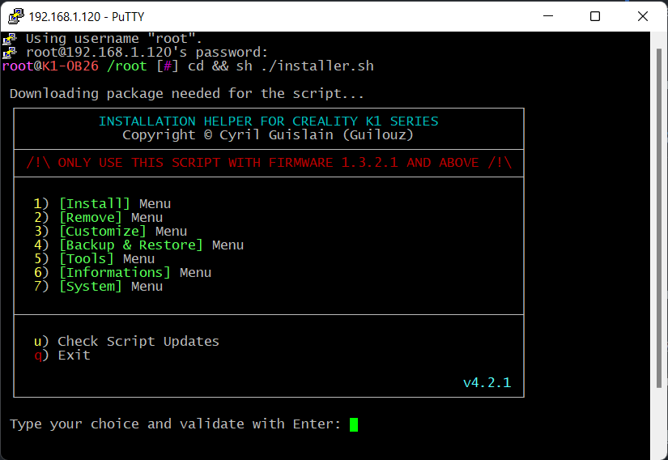
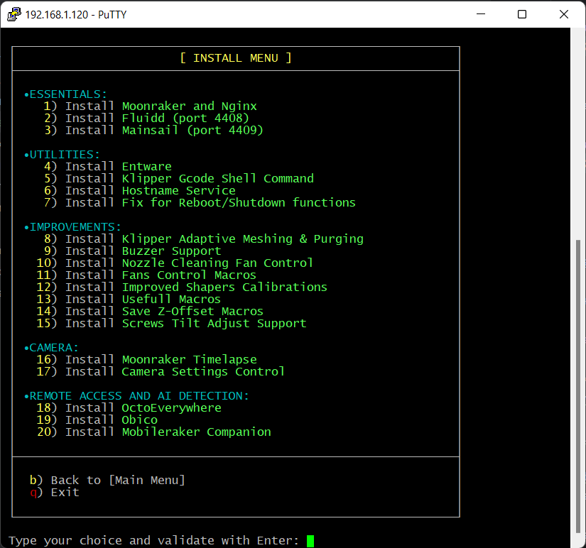
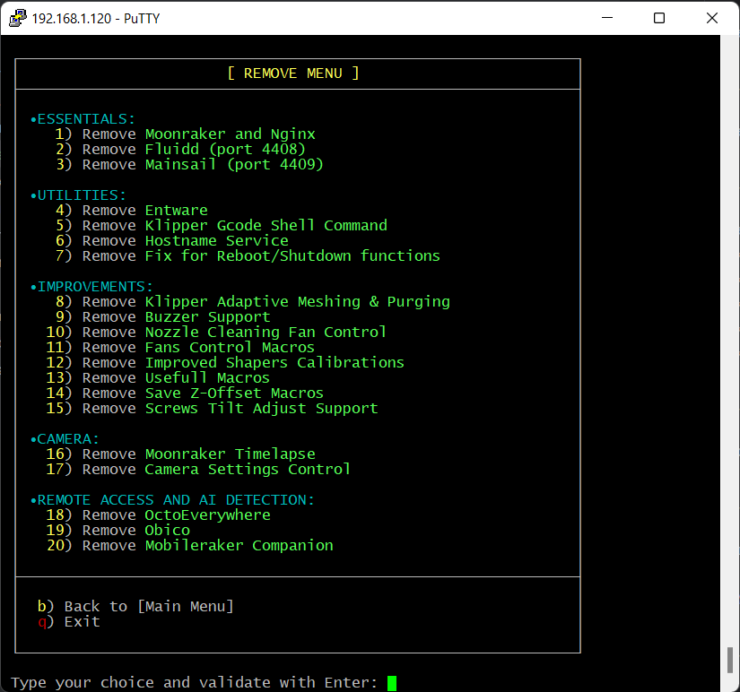
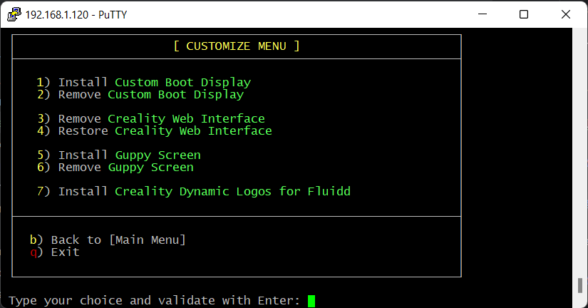
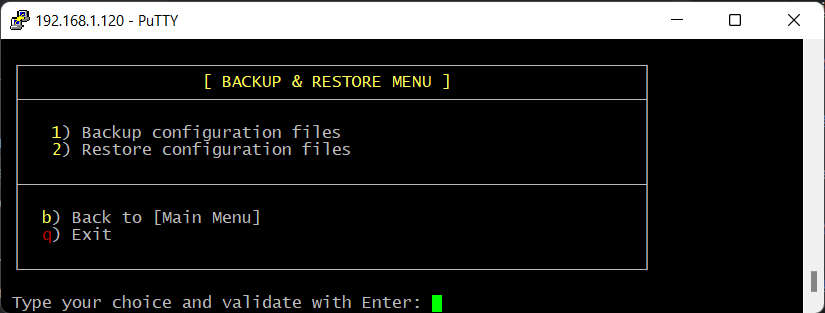
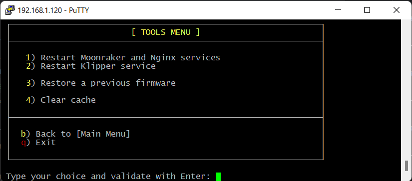
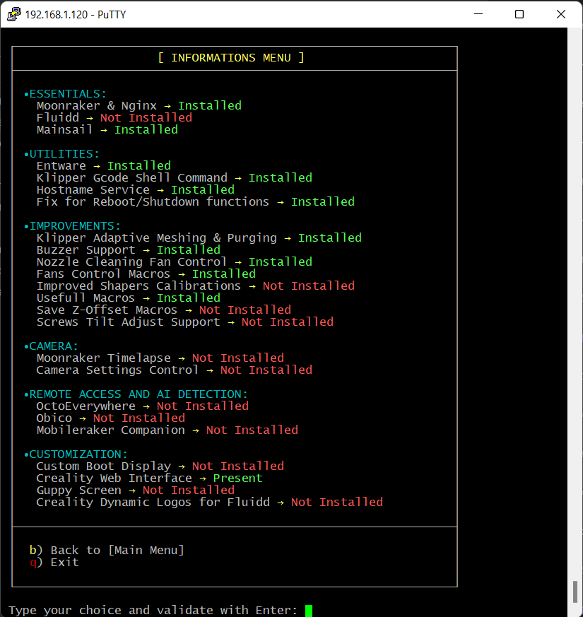
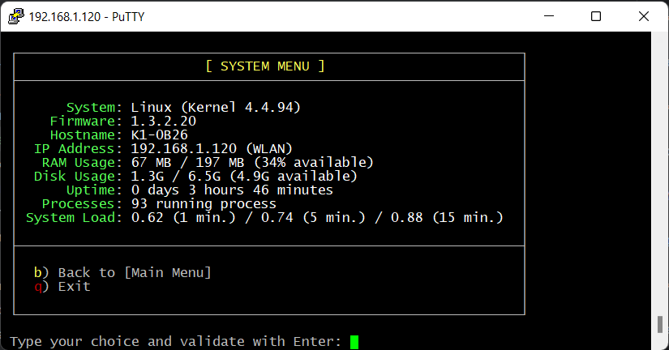

Запуск и обновление Installation Helper Script
Installation Helper Script позволяет после получения root доступа и подключению к принтеру по SSH, установить кастомные веб интерфейсы (Fluidd, Mainsail), а так же установить остальные полезные дополнения от автора скрипта и сообщества.
Более подробную информацию о Installation Helper Script можно найти в github автора Installation Helper Script (на английском языке).
Загрузка и запуск
Для загрузки Installation Helper Script нужно выполнить команду в терминале:
cd && wget --no-check-certificate https://raw.githubusercontent.com/Guilouz/Creality-K1-and-K1-Max/main/Scripts/installer.sh
После загрузки скрипта, для запуска, используйте команду:
cd && sh ./installer.sh
Если все сделано правильно, в окне терминала появится следующее:

Для навигации используются цифры и буквы b - вернуться в предыдущее меню, q - выйти из скрипта в командную строку, для подтверждения используйте клавишу Enter.
Меню Install

1) Moonraker and Nginx
Набор сервисов, для взаимодействия с Klipper. Предоставляет REST API для управления прошивкой. Необходим для работы Fluidd и Mainsail.
2) Fluidd
Альтернативный веб интерфейс для принтера. После установки будет доступен по адресу http://<ip принтера>:4408.
3) Mainsail
Альтернативный веб интерфейс для принтера. После установки будет доступен по адресу http://<ip принтера>:4409.
Info
Для удаленной печати из Orca Slicer необходимо наличие Moonraker и либо Fluidd, либо Mainsail. При добавлении принтера в OrcaSlicer не забудьте указать порт, в зависимости от веб интерфейса: 4408 или 4409 соответственно.
4) Entware
Репозиторий готовых пакетов программ. Необходим для установки некоторых других модификаций.
5) Klipper Gcode Shell Command
Позволяет выполнять кастомные скрипты из Klipper макросов.
6) Hostname Service
Позволяет изменить имя принтера в сети (для прошивок < 1.3.2.20).
7) Fix for Reboot/Shutdown functions
Исправление команд выключения и перезагрузки принтера из веб интерфейса.
8) Klipper Adaptive Meshing & Purging
Установка Klipper Adaptive Meshing & Purging (коротко - KAMP). Вместо калибровки всего стола перед каждой печатью, делает калибровку стола только в области печати модели. Так же заменяет линию очистки перед печатью на свою.
9) Buzzer Support
Возможность использования зуммера материнской платы из веб интерфейса, и в макросах Klipper.
10) Nozzle Cleaning Fan Control
Добавляет возможность контролировать скорость вентиляторов при очистке сопла.
11) Fans Control Macros
Добавляет возможность контролировать скорость вентиляторов Вентиляции и Материнской платы из слайсера.
12) Improved Shapers Calibrations
Добавляет калибровку Input Shaper, калибровку натяжения ремней и возможность генерации графиков.
13) Usefull Macros
Установка полезных макросов:
- BED_LEVELING - запуск измерения уровня стола
- PID_BED - калибровка PID стола
- PID_HOTEND - калибровка PID сопла
- LUBRICATE_RODS - макрос для размазывания смазки по валам принтера
- WARMUP - стресс тест механики
14) Save Z-Offset Macros
Макрос автоматического сохранения и загрузки Z-Offset
15) Screws Tilt Adjust Support
Поддержка Screws Tilt Adjust. Для столов с переделанных на регулировочные винты.
16) Moonraker Timelapse
Поддержка записи таймлэпс видео печати.
17) Camera Settings Control
Макросы настройки камеры
18) OctoEverywhere
Контроль принтера через облако OctoEveywhere
19) Obico
Контроль принтера через облако Obico
20) Mobileraker Companion
Mobileraker Companion позволяет получать уведомления о статусах печати в реальном времени, в приложении Mobileraker
Меню Remove

Тоже самое, что и Меню Install, только служит для удаления установленного в первом меню.
Меню Customize

В меню Customize установка и удаление модификаций идет парами
1-2) Custom Boot Display
Установка/Удаление кастомного экрана включения принтера.
3-4) Creality Web Interface
Установка/Удаление стандартного веб интерфейса Creality.
5-6) Guppy Screen
Установка/Удаление Guppy Screen, альтернативного UI для экрана принтера.
7-8) Creality Dynamic Logos for Fluidd
Установка динамических логотипов для Fluidd
Меню Backup & Restore

Меню бэкапа и восстановления конфигурации.
1) Backup configuration files
Бэкап файлов конфигурации.
2) Restore configuration files
Восстановление файлов конфигурации.
Меню Tools

1) Restart Moonraker and Nginx services
Перезапуск Moonraker и Nginx.
2) Restart Klipper service
Перезапуск сервиса Klipper.
3) Restore a previous firmware
Восстановление предыдущей прошивки.
4) Clear cache
Очистка кэшей
Меню Informations

Информация об установленных модификациях
Меню System

Информация о системе